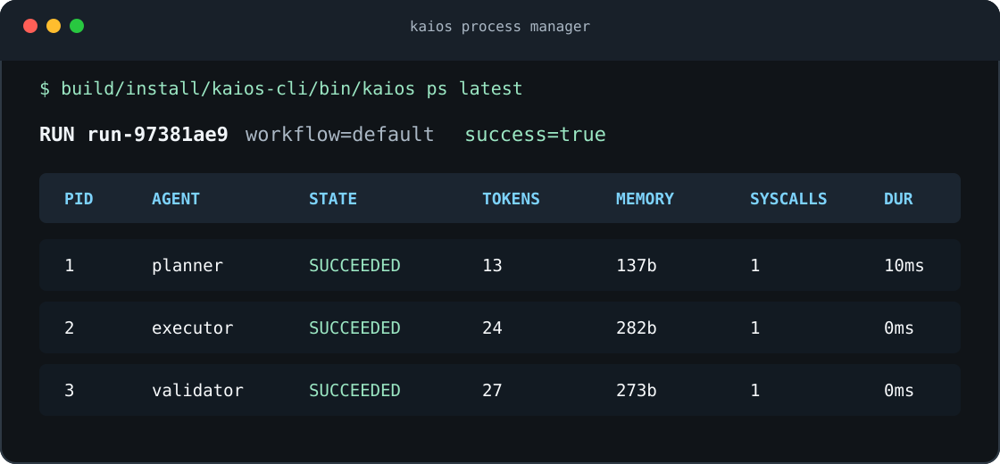
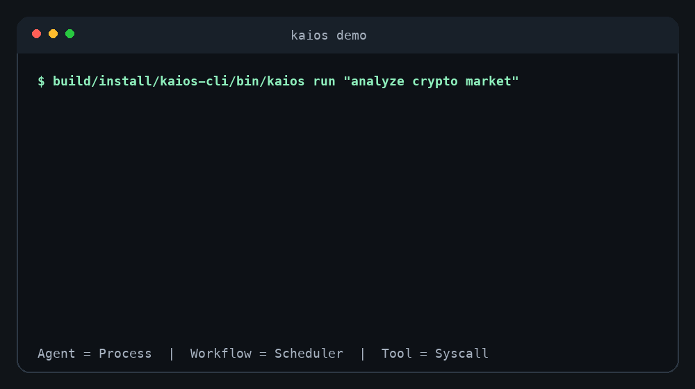

Deterministic by default
Mock model execution keeps the first run local and reproducible, while provider interfaces leave room for real models.
MockModelProviderAI Agent Operating System in Kotlin. Agents run like processes, workflows schedule them like a kernel, and tools cross syscall boundaries.
KAI OS starts from operating-system primitives: lifecycle, scheduling, permissions, memory, and observable process state.
Spawn, start, suspend, resume, cancel, succeed, and fail agent processes with durable event traces.
AgentProcess(pid, state)
Execute DAG workflows with parallel-ready nodes, observable retries, fallback routing, timeout policy, and sibling cancellation.
WorkflowScheduler
Route side effects through permissioned syscall-style tools instead of direct agent access.
ToolRegistry
Use session memory, SQLite persistence, and JSON run snapshots for local inspection.
MemoryStore

The CLI exposes process-style observability from the first demo, with no external API key required.
The default workflow and editable project configs emit process metrics, lifecycle events, and KAI Process Trace JSON that can be inspected after the run.

The first milestone is intentionally small, deterministic, and inspectable so contributors can build on the runtime instead of reverse-engineering a demo.
Mock model execution keeps the first run local and reproducible, while provider interfaces leave room for real models.
MockModelProviderOpenAI-compatible and Ollama providers plug into the same runtime abstraction when you want live inference.
ModelProviderEcho, clock, mock HTTP, allowlisted real HTTP, and scoped file access demonstrate permissioned tool execution.
ToolPermissionSession memory, SQLite memory, and JSON snapshots make agent runs inspectable after execution.
MemoryStoreRun workflows, list runs, print process tables, inspect lifecycle events, emit process traces, render reports, and export Markdown artifacts.
kaios traceGenerate no-key Markdown or JSON project reports with kaios analyze, map source shape, and preview bounded context files.
kaios analyzeGenerate template workflows, validate configs, show the DAG, auto-run kaios.json, and create a GitHub Actions Agent Gate.
kaios init --ciDescribe agents and workflows with typed Kotlin APIs that can grow into plugin and UI layers.
agent { workflow }The v0.1.50 CLI installs locally with no API key. Run the demo, bootstrap a validated workflow with setup, verify the runtime gate, or create a safe bug report for support.
brew tap morning-verlu/tap
brew install kaios
kaios demo
kaios setup --ci
kaios verify
kaios run --index . --context README.md --out artifacts/project.md --trace-out artifacts/trace.json --force "summarize this project"
kaios ps latest
kaios trace latest
kaios export latest
# or:
curl -fsSL https://morning-verlu.github.io/KAI/install.sh | sh
export PATH="$HOME/.kaios/bin:$PATH"
kaios demo
kaios setup --ci
kaios verify
kaios run --index . --context README.md --out artifacts/project.md --trace-out artifacts/trace.json --force "summarize this project"
kaios ps latest
kaios inspect latest
kaios trace latest
kaios report latest